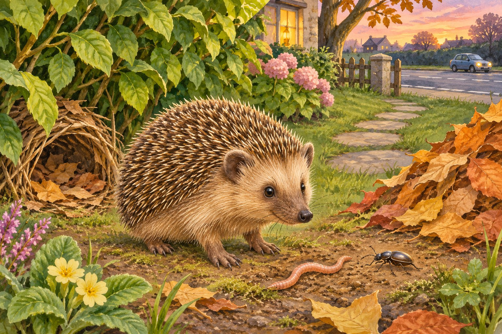

Entdecke das Bild: Hinter jeder Zahl steckt ein Thema.
0 von 5 entdeckt
Oder entdecke die Themen frei in deiner Reihenfolge.
Es warten zehn Fragen auf dich.
Das Igel-Quiz
Welche Antwort passt? Tippe sie an.
Beantworte die Fragen. Du kannst es jederzeit noch einmal versuchen.